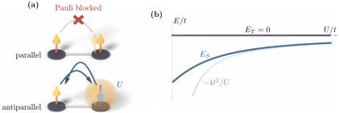

Page 5 of 11 of this session
6.8 From the Hubbard dimer to the Heisenberg model
What sets the energy scale of magnetism when the repulsion \(U\) is much larger than the hopping \(t\), and why does it prefer antiparallel spins? We will now see that the smallest example, the Hubbard dimer, answers both questions. Its singlet lies below its triplet by \(J=4t^2/U\), and this splitting is the coupling of the Heisenberg model of the two spins.
\[H = -t\sum_{n,\sigma}\left(c_{n\sigma}^\dagger c_{n+1,\sigma} + \text{h.c.}\right) + U\sum_n c_{n\uparrow}^\dagger c_{n\uparrow}\, c_{n\downarrow}^\dagger c_{n\downarrow}, \tag{6.1}\]
This is the Hubbard chain of Section 6.3, with the hopping \(t\) between neighboring sites and the repulsion \(U\) between the two electrons of one site. Here we keep only two of its sites.
We take two sites, \(0\) and \(1\), with a hopping \(t\) between them, a local repulsion \(U\) on each of them, and exactly two electrons in total, which is half filling. The Fock space at this filling has \(\binom{4}{2}=6\) states. Four of them have one electron on each site, where the electron of each site can be up or down independently. The other two have both electrons on the same site, with one electron up and one down because of Pauli exclusion.
Let us group these states by energy in the atomic limit (\(t=0\)). The four configurations with single occupation, \(|\!\uparrow,\uparrow\rangle\), \(|\!\downarrow,\downarrow\rangle\), \(|\!\uparrow,\downarrow\rangle\) and \(|\!\downarrow,\uparrow\rangle\), have no interaction energy. We call them the low-energy manifold, at energy \(0\). The two configurations with double occupation, \(|\!\uparrow\downarrow,0\rangle\) and \(|0,\uparrow\downarrow\rangle\), each have the full charging energy \(U\), and they form the high-energy manifold. In the low-energy manifold every state has exactly one electron per site, so the charge degree of freedom is completely frozen and only the spin on each site can still fluctuate. For this reason the natural low-energy effective Hamiltonian is a Hamiltonian for the spin only, and rotational invariance fixes its form up to an overall coupling, \(H_\text{eff} = J\, \mathbf S_0\cdot\mathbf S_1\), which is the two-site Heisenberg Hamiltonian. What remains is to obtain \(J\) from the microscopic \(t\) and \(U\).
The hopping, which is the perturbation, conserves the total spin, so for the parallel-spin states it cannot connect the low-energy manifold to the high-energy one at all. If we apply \(H_t\) to \(|\!\uparrow,\uparrow\rangle\), we would need to move a spin-up electron onto a site that already has one, and Pauli exclusion forbids this completely. The three parallel or triplet-like states are \(|\!\uparrow,\uparrow\rangle\), \(|\!\downarrow,\downarrow\rangle\) and the symmetric combination \(\tfrac{1}{\sqrt2}(|\!\uparrow,\downarrow\rangle+|\!\downarrow,\uparrow\rangle)\). These three states are exact eigenstates of the full Hamiltonian at energy \(E_T=0\), since the hopping does not act on them at any order.
The antiparallel or singlet combination \(|S\rangle=\tfrac{1}{\sqrt2}(|\!\uparrow,\downarrow\rangle-|\!\downarrow,\uparrow\rangle)\) is different. The hopping can connect it to the symmetric combination with double occupation, \(|D\rangle=\tfrac{1}{\sqrt2}(|\!\uparrow\downarrow,0\rangle+|0,\uparrow\downarrow\rangle)\), with matrix element \(\langle D|H_t|S\rangle = -2t\). In the two-dimensional subspace \(\{|S\rangle,|D\rangle\}\), the Hamiltonian is exactly
\[H = \begin{pmatrix} 0 & -2t \\ -2t & U\end{pmatrix},\]
with exact eigenvalues \(E_\pm = \tfrac{U}{2}\pm\sqrt{(U/2)^2+4t^2}\). The energy of the singlet ground state is the lower root, \(E_S = \tfrac{U}{2}-\sqrt{(U/2)^2+4t^2}\), and if we expand it for \(U\gg t\) we obtain
\[E_S \;\approx\; -\frac{4t^2}{U} + O(t^4/U^3), \qquad E_T = 0 \text{ exactly.}\]
We compare this with the exact spectrum of the Heisenberg dimer, \(E_\text{singlet}=-\tfrac34 J\) and \(E_\text{triplet}=+\tfrac14 J\), where the singlet-triplet gap is \(\Delta E = E_T-E_S = J\). The comparison gives the main result of this section.
For \(U\gg t\) the two spins of the half-filled Hubbard dimer are coupled by
\[J = \frac{4t^2}{U}. \tag{6.4}\]
\(J\) is the splitting between the triplet and the singlet, and it is positive, so antiparallel spins are lower, because only they can hop. The exact splitting is a little smaller, \(0.83\) of \(4t^2/U\) at \(U=4t\) and \(0.98\) of it at \(U=16t\).
The steps The singlet, the triplet and their coupling to the doubly occupied state
We fix the order of the operators in the basis, with the operator of site \(0\) first,
\[|\!\uparrow,\downarrow\rangle=c^\dagger_{0\uparrow}c^\dagger_{1\downarrow}|0\rangle,\qquad |\!\downarrow,\uparrow\rangle=c^\dagger_{0\downarrow}c^\dagger_{1\uparrow}|0\rangle,\qquad |\!\uparrow\downarrow,0\rangle=c^\dagger_{0\uparrow}c^\dagger_{0\downarrow}|0\rangle,\qquad |0,\uparrow\downarrow\rangle=c^\dagger_{1\uparrow}c^\dagger_{1\downarrow}|0\rangle,\]
and the hopping is \(H_t=-t\sum_\sigma\big(c^\dagger_{0\sigma}c_{1\sigma}+c^\dagger_{1\sigma}c_{0\sigma}\big)\).
The simplest case is \(|\!\uparrow,\uparrow\rangle\). The terms of \(H_t\) with spin up would move an up electron onto a site that already has one, and the terms with spin down find no down electron, so \(H_t|\!\uparrow,\uparrow\rangle=0\). In the same way \(H_t|\!\downarrow,\downarrow\rangle=0\).
For the antiparallel states, \(H_t\) moves the electron of one site onto the other site. We then bring the operators back to the order of the basis, which can give a minus sign, and we get
\[H_t|\!\uparrow,\downarrow\rangle=-t\big(|\!\uparrow\downarrow,0\rangle+|0,\uparrow\downarrow\rangle\big),\qquad H_t|\!\downarrow,\uparrow\rangle=+t\big(|\!\uparrow\downarrow,0\rangle+|0,\uparrow\downarrow\rangle\big).\]
The two results have opposite signs. So they cancel in the symmetric combination, which gives \(H_t|T_0\rangle=0\) for \(|T_0\rangle=\tfrac{1}{\sqrt2}(|\!\uparrow,\downarrow\rangle+|\!\downarrow,\uparrow\rangle)\), and they add in the singlet,
\[H_t|S\rangle=-\frac{2t}{\sqrt2}\big(|\!\uparrow\downarrow,0\rangle+|0,\uparrow\downarrow\rangle\big)=-2t\,|D\rangle.\]
The antisymmetric combination of the two doubly occupied states is not reached by the hopping, so it stays at the energy \(U\). The sign of \(-2t\) depends on the order of the operators in the basis, and the eigenvalues do not, since another order only changes the sign of some basis states.
The last step is the expansion of the lower eigenvalue for \(U\gg t\). We write \(\sqrt{U^2/4+4t^2}=\tfrac U2\sqrt{1+16t^2/U^2}\) and use \(\sqrt{1+x}\approx1+x/2\) for small \(x\), which gives
\[E_S\approx\frac U2-\frac U2\Big(1+\frac{8t^2}{U^2}\Big)=-\frac{4t^2}{U}.\]
The triplet stays at \(0\), so the splitting is \(4t^2/U\), which is \(J\) of (6.4).
We have \(J>0\), which is antiferromagnetic, and the singlet is below the triplet. This confirms, with the correct numerical prefactor, the estimate of second-order perturbation theory. There the unperturbed Hamiltonian is the Hubbard term, the perturbation is the hopping, the matrix element is \(t\) and the energy denominator is \(U\). It also reproduces the \(1/U\) scaling that we found numerically for the energy difference between the ferromagnet and the antiferromagnet in Section 6.5. That mean-field energy difference per bond is one half of the exchange coupling (6.4), so the two completely different calculations, the mean-field numerics and the many-body perturbation theory, agree. Figure 6.2 shows the whole argument. It shows the Pauli blockade that protects the triplet, the virtual process that lowers the energy of the singlet, and the exact spectrum, whose splitting is \(J\).

Notebook check-in: session6.ipynb, “(Reminder) The spectra of a dimer,” “(Exercise) The interacting Hubbard dimer,” “Gap opening in the Hubbard model,” and “(Exercise) The strongly interacting limit”
The first cell has no interaction, and it gives the single-particle levels \(\pm t\) of the dimer. The other three use mean field, and not the six states of this section. The second one solves the dimer in mean field, where a moment appears only above \(U=2t\), while the exact dimer of this section has a singlet ground state with no ordered moment. The third one follows the mean-field gap of the chain as \(U\) grows. The last one compares the energies of the ferromagnet and the antiferromagnet at large \(U\), whose difference falls as \(1/U\), as the coupling \(J\) of (6.4) does.
In the nanographene C\(_{38}\)H\(_{18}\), which is called Clar’s goblet, the network of \(\pi\) electrons cannot be given a classical Kekulé structure without leaving unpaired electrons. Scanning tunnelling microscopy and spin excitation spectroscopy of single molecules on a gold surface show antiferromagnetic order with an exchange-coupling strength of \(23\) meV. The measurement is in this article. In our reading this coupling plays the role of \(J\) of (6.4), the splitting between the singlet and the triplet of two coupled spins. We also read the spin excitation of the measurement as the flip of one spin, from the singlet to the triplet.
At large \(U\) the two spins of the Hubbard dimer have the coupling
\[J=\frac{4t^2}{U}.\]
We double the hopping \(t\) and keep \(U\) fixed. How does \(J\) change?
Show the answers
- A. ✗ False
This is false. Take \(U=10\) and \(t=1\), so \(J=4/10=0.4\). For \(t=2\) we get \(J=16/10=1.6\), which is four times larger and not \(0.8\).
- B. ✓ True
This is true. The coupling \(J=4t^2/U\) depends on \(t^2\), so doubling \(t\) gives a factor of four. The process needs two hops, one to the doubly occupied state and one back.
- C. ✗ False
This is false. For \(t=0\) the two sites are decoupled and the singlet and triplet are degenerate, so \(J=0\). Then \(J\) has to depend on \(t\), and it follows \(t^2\).
In the basis \(\{|S\rangle,|D\rangle\}\) the dimer has the matrix
\[H=\begin{pmatrix}0&-2t\\-2t&U\end{pmatrix}.\]
Here \(|S\rangle\) is the singlet and \(|D\rangle\) the doubly occupied state. What is the singlet energy?
Show the answers
- A. ✓ True
This is true. The eigenvalues of the matrix are \(\tfrac U2\pm\sqrt{U^2/4+4t^2}\), and the singlet is the lower one. At \(U=10t\) it is \(-0.385t\).
- B. ✗ False
This is false. This is the lower eigenvalue for the coupling \(-t\) instead of \(-2t\). At \(U=0\) the matrix has the eigenvalues \(\pm2t\), while this formula gives \(-t\).
- C. ✗ False
This is false. This is only the first term for \(U\gg t\). At \(U=4t\) the lower eigenvalue is \(2t-\sqrt8\,t=-0.828t\), while \(-4t^2/U\) gives \(-t\), and at \(U=0\) the formula diverges.
Two sites have the hopping \(t\), the repulsion \(U=10t\) on each site and two electrons. One bar is one level, and bars side by side have the same energy. Which picture shows the four lowest levels?
Show the answers
- A. ✓ True
This is true. The hopping keeps the total spin, and the doubly occupied states have spin zero, so the triplet stays at \(E_T=0\). The singlet goes through the doubly occupied state and goes down to \(E_S=5t-\sqrt{29}\,t=-0.385t\), close to \(-4t^2/U=-0.4t\).
- B. ✗ False
This is false. Here the three degenerate levels are lowered. The hopping keeps the total spin and cannot reach the doubly occupied states from the triplet, so the triplet stays at \(E=0\) for every \(U\), and only the singlet goes down.
- C. ✗ False
This is false. Four degenerate levels are the atomic limit \(t=0\). At \(U=10t\) the singlet is split off by \(0.385t\), the exact splitting, close to \(J=4t^2/U=0.4t\).
The singlet of the dimer is at \(E_S=\tfrac U2-\sqrt{U^2/4+4t^2}\) and the triplet at \(E_T=0\). Expand the splitting \(E_T-E_S\) to the next order in \(t/U\). Compare it at \(U=8t\) with the exact value and with \(4t^2/U\).
Solution
We write \(E_T-E_S=\tfrac U2\big(\sqrt{1+x}-1\big)\) with \(x=16t^2/U^2\), and we use \(\sqrt{1+x}\approx1+\tfrac x2-\tfrac{x^2}8\). This gives
\[E_T-E_S\approx\frac U2\Big(\frac{8t^2}{U^2}-\frac{32t^4}{U^4}\Big)=\frac{4t^2}{U}-\frac{16t^4}{U^3}.\]
At \(U=8t\) the first term is \(0.5t\) and the second one is \(-0.031t\), so the expansion gives \(0.469t\). The exact value is \(\sqrt{20}\,t-4t=0.472t\), which is \(0.944\) of \(4t^2/U\). The correction is negative, so the exact coupling of the dimer is a little smaller than \(4t^2/U\). When a measured singlet-triplet splitting is used to estimate \(t\) and \(U\), this correction matters as long as \(U\) is only a few times \(t\).
Try it. In the cell, the dimer is solved in mean field for Us from 0 to 10. The moment of a site stays at zero up to \(U=2t\) and then grows as \(\sqrt{1-4t^2/U^2}\), to \(0.87\) at \(U=4t\) and \(0.98\) at \(10t\), and the gap goes from \(2t\) to \(U\). The exact dimer of this section has no ordered moment at any \(U\), meaning that \(\langle n_\uparrow-n_\downarrow\rangle=0\) on each site, since its ground state is the singlet. Its local moment \(\langle(n_\uparrow-n_\downarrow)^2\rangle\) is still \(0.85\) at \(U=4t\). So the ordered moment of the cell comes from mean field.
- In Section 7.3 the singlet (7.3) of the Heisenberg dimer is the first example of a state that is hard to store, since it is maximally entangled.
- In Section 8.3 the same Heisenberg dimer (8.2) is compared with an Ising dimer, and its singlet ground state breaks no symmetry.
- In Section 8.5 a lattice of such singlets gives a magnet whose ground state does not break time-reversal symmetry.